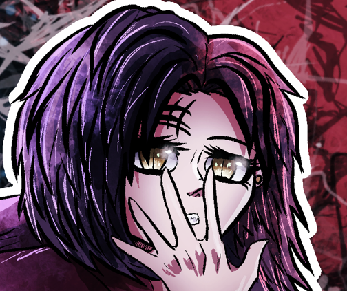

Handmade Doll
Lover's May - December 2025


Document #3A
Lover's May started as early as August 2025 with the production of the self-released full length album "Handmade Doll" The man behind the project, William Ortega, believes in music and artistic media as mediums of not only self expression, but as a form to make one's time more fulfilling, even if it means only a few people will lay eyes on one's artwork, even if it means only a few people will have ears for one's music, even if it means only you are actively reading this. 
Handmade Doll follows the narrative of a girl in Nebraska named Vicky, each track does not flow in a cronological order but rather leaves just enough room for ambiguity to interpret each little story into the bigger story that is Vicky's motivations.
Handmade Doll blends styles such as metalcore, deathcore, metallic hardcore, screamo, alternative metal, and even indie goth influences into a raw, honest sound.
Do you understand? this place feeds on fear and bitter resentment, this scar I wear marked my trayectory, and...Soon enough... These mutations that have and will help me to mainting my integrity...And perhaps yours too.
But maybe I'm not enough to reassure you, why don't you meet us all next? I'm sure you'll like us, don't just take my word for it though, once we let you know of what we had to deal with due to what happened that day... Well, maybe you'll realize of what I'm trying to tell you right now, that things are not what they seem, and neither is what is coming next.
Recorded by William Ortega
Artwork by William Ortega
Written, performed, and programmed by William Ortega